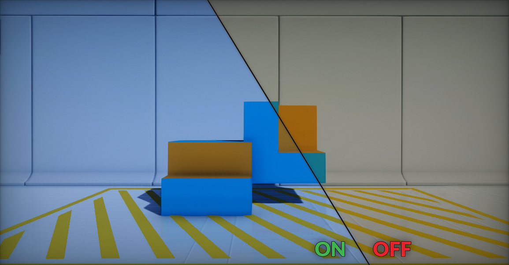
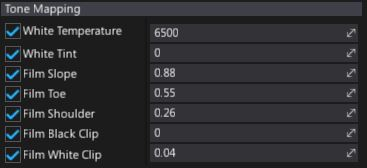

Tone Mapping

Tone Mapping takes high dynamic range (HDR) input colors, and remaps them into low dynamic range (LDR) that a display can show. This is the last stage of the post processing the frame.
Tip
It's highly recoomended to set tone mapper options per whole project rather than per camera shot. For more dynamic image adjustment use Color Grading.
Filmic Tone Mapper
Flax Engine implements the industry standart set by the Academy Color Encoding System (ACES) for television and film. This leads to consistent color preserved across multiple formats and displays while also as a way to future proof the source material since it will not have to be adjusted for each medium that comes along. The goal is to use standarized high-quality format.
Properties
Using tone mapper options allows to adjust final filmic S-curve shape and balance the colors temperature.

| Property | Description |
|---|---|
| White Temperature | Adjusts the white balance in relation to the temperature of the light in the scene. When the light temperature and this one match the light will appear white. When a value is used that is higher than the light in the scene it will yield a "warm" or yellow color, and, conversely, if the value is lower, it would yield a "cool" or blue color. The default value is 6500. |
| White Tint | Adjusts the white balance temperature tint for the scene by adjusting the cyan and magenta color ranges. Ideally, this setting should be used once you've adjusted the white balance temporature to get accurate colors. Under some light temperatures, the colors may appear to be more yellow or blue. This can be used to balance the resulting color to look more natural. The default value is 0. |
| Mode | The tone mapping mode to use for the color grading process. |